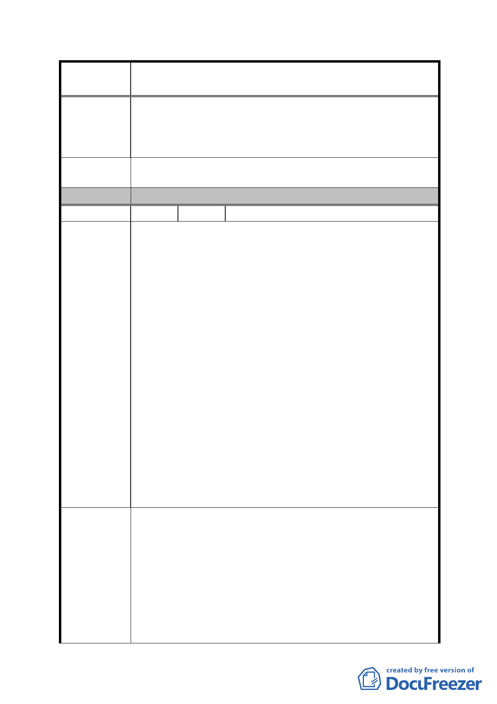

案
名
修訂臺北市「基隆河（中山橋至成美橋段）附近地區土地使
用分區與都市設計管制要點」（北段地區）計畫案
2、獎勵取消整合誘因消失，分別共有地主欲藉地籍分割自
行作小基地開發使用機率將大增，勢必影響原都市計
畫、都市設計之大街廓開發基本立意與預期之都市態樣
風貌。
建議辦法
A1、A2 商業區及 B1、B2 娛樂區合併大型基地開發 5%容積獎
勵應予至少延長五年。
委 員 會 決 議 同編號 1。
編 號 17 陳情人 潘淑惠
1、「法規命令，有下列情形之ㄧ者，無效：．．．二、無法
律之授權而剝奪或限制人民之自由、權利者。」，行政程
序法第一五八條第一項第二款定有明文；本項限制人民
權利之修訂內容既無法律授權，在在不符憲法第二十三
條揭櫫限制基本人權三大要件：公益目的、法律保留原
則及比例原則，是項行政命令自有自始、確定、當然無
效之虞。
2、面臨計畫道路可獨立經營之店面及負責人辦公室均有獨
立設置廁所或茶水間之需求。
陳 情 理 由 3、需考量夜間加班之婦女於使用集中留設廁所之方便性並
防範治安風險。
4、樓地板面積規模須大於 500 平方公尺，單位登記面積將
逾 250 坪，總價動輒 1.5～2 億，本區商用不動產本已難
與單價位不及 1/2 之內湖科學園區類似用途產品競爭，
如再加大其銷售總價，無異雪上加霜，徒然增加本區商
業用地開發風險。
5、本項規定不啻對市場機能、地主意願、建築規劃強加限
制，如分別共有地主開發後分配面積不及一完整單位，
勢將影響其開發意願，實務執行上有其困難。
取消下列有關開發許可之規定，俾免制定違法違憲且自始無
效之行政命令：
(二)本計畫區商業區及娛樂區之建物安全管理站相關設施
應設置於建築物內部，及建築物地面層第一層、第二層
建議辦法
不得設置停車空間及超過當層10%以上樓地板面積之管
理委員會使用空間。
(三)本計畫區商業區及娛樂區內非作住宅使用之建築物內
部公眾使用設施(如梯廳、廁所、茶水間等)應集中留設。
△：指定使用組別(限各層樓每一營業單元之營業樓地板面
- 74 -